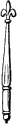

<h1>Scarpe</h1>
<p>Scarpe, or Escarpe: a <a  href="../d/diminutive.html">diminutive</a> of the <a  href="../b/bend-sinister.html">bend sinister</a>, q.v.</p>
<figure class="parker-illustration float-md-right"><figcaption class="parker-caption">Sceptre.</figcaption></figure>


